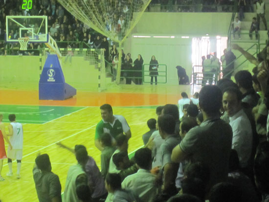

|
|
زنان و ورزش، زنان و ورزشگاه ؛ محدودیت هایی که پایانی ندارد
انتقاد رجا نیوز از حضور زنان برای تشویق مردان در اصفهان
دو شنبه2 خرداد 1390
تغییر برای برابری: حضور زنان در ورزشگاهها، برای تشویق مردان ورزشکار چند سالی است که در ایران تبدیل به موضوعی جنجالی شده است. از بحث حضور زنان در استادیوم های فوتبال که بگذریم، تا همین چند وقت پیش حضور زنان در مسابقات دیگری همچون والیبال و بسکتبال هم ممنوع بود و حتی در دانشگاهها نیز دختران دانشجو اجازه نداشتند مسابقات پسران را در زمین های روباز دانشجویی تماشا کنند. اما پس از مدتی زنان برای مسابقات والیبال و بسکتبال به زمین های مسابقه راه یافتند اما با یک قید: "فقط برای مسابقات ملی" هر چند این موضوع همیشه محل اختلاف میان مسئولین، اقکار عمومی و بخشی از مذهبیون بوده است. در آغاز سال ۱۳۸۵ محمود احمدینژاد، رئیس جمهور ایران با ارسال نامهای به رییس سازمان تربیت بدنی خواستار فراهم کردن امکانات حضور زنان در ورزشگاهها شد. این نامه با اظهارنظرهای متفاوتی در میان مسئولین کشور، نمایندگان مجلس شورای اسلامی و خبرگزاریهای خارجی همراه شد و با مخالفت صریح گروهی از روحانیون در شهر قم نتوانست آن را به اجرا بگذارد و از تصمیم خود صرف نظر کرد. احمد خاتمی خطیب محافظهکار نماز جمعه تهران مهمترین عامل مخالفت روحانیون با حضور زنان در ورزشگاهها را اهمیت رعایت حجاب و عفاف دانست و گفت نمیتوان تضمینی بر رعایت آن در صورت حضور زنان در .ورزشگاهها برای تماشای مسابقات ورزشی داد. در تمام این سال ها همواره استدلال مخالفان حضور زنان در ورزشگاه به خطر افتادن عفاف به دلیل لباس های ورزشی آقایان و جو بد ورزشگاهها بوده است

از سوی دیگر ، حذف سیستماتیک زنان از عرصه ی عمومی ورزش، کم بها شدن ورزش حرفه ای زنان به دلیل عدم امکان شرکت آنها در مسابقات بین المللی، حاشیه های بعضا مضحک بر سر اختراع انواع لباس های جایگزین برای زنان ورزشکار، زدن از سر و ته بودجه ی زنان، رویه ی دیگر ماجرای زنان و ورزش است. در حالیکه ظاهرن هیچ برنامه ی مدونی برای بهبود این وضعیت وجود ندارد، ، آمارها نشان دهنده ی آن است که دختران ایرانی دچار فقر حرکتی هستند و در آینده ممکن است با مشکلات جدی در این زمینه روبرو شوند.
با اینحال زنان ورزشکار با تحمل سختی های بسیار میدان را ترک نکرده اند و بعضا با وجود مقررات دست و پاگیر و تو در تو های قانونی مختلف به موفقیت های جهانی نیز دست یافته اند
در این میانه خبرنگار رجا نیوز، شکایت از این دارد که چرا زنان به دیدار یک مسابقه ی بسکتبال در اصفهان رفته اند و نوشته است که اگر می دانست زنان برای تشویق مسابقه حضور دارند، هرگز خانواده اش را همراه با خود به این محل نمی برد! در این مطلب به حضور زنان دوچرخه سوار در میدان نقش جهان اشاره شده است و این در حالیست که چندی پیش و همزمان با برپایی ایستگاههای دوچرخه سواری شهری در اصفهان، اعلام شد که دختران حق استفاده از این امکان شهری را ندارند و به این ترتیب امکانی که با هزینه ی همه ی شهروندان به وجود آمده بود یک شبه از نیمی از آنان دریغ شد! گویی لزومی ندارد که زنان دوچرخه سوار شوند، در پاکیزگی هوا سهیم شوند و به سلامت خود کمک کنند.، باید در خانه بمانند تا عفت عمومی مورد نظر خبرنگار رجانیوز و خانواده اش تامین شود.